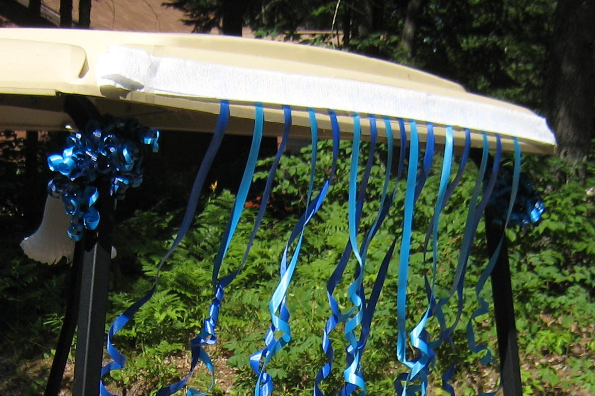

TOP 10 MUST-HAVES · HALLOWEEN
Top 10 Must-Haves: Halloween Golf Cart Parade
The ten things that turn a golf cart into the best float on the block, from decorations and lights to music and candy.
As an Amazon Associate I earn from qualifying purchases. Links and cart buttons on this page are affiliate links and may earn a commission at no extra cost to you. Read the full disclosure.

Ten picks, in order, each with the one reason it earns a spot. Every one comes from our Halloween Golf Cart Parade Kit, so it's already been checked.
1Suncalla
Suncalla 25-Piece Halloween Golf Cart Decoration Kit
Why it's a must-have: One box dresses the whole cart: a banner, pumpkin garlands, a web and spiders sized for the roof and rails.
2Tryly
Tryly Witch-Theme Halloween Golf Cart Decoration Kit
Why it's a must-have: The oversized witch hat and black cats turn a decorated cart into a themed float people remember.
3Brightown
Brightown Orange and Purple Battery String Lights, 2-Pack (100 LED, 35.6 ft)
Why it's a must-have: Battery strings with a built-in timer run the roof struts, so the cart glows without a cord.
4Amazon Basics
Amazon Basics AA Alkaline Batteries, 20-Pack
Why it's a must-have: The string lights need 6 AA batteries that aren't in the box, and this leaves spares for parade night.
5ECRABONE
ECRABONE 12 in. Heavy-Duty UV-Resistant Zip Ties, 100-Pack
Why it's a must-have: Holds garlands, props, lights and battery boxes to the cart without drilling a single hole.
6JBL
JBL Flip 6 Portable Waterproof Speaker
Why it's a must-have: Loud enough to carry the parade soundtrack down the route, and it shrugs off a damp night.
7HomeMount
HomeMount Golf Cart Speaker Strap Mount
Why it's a must-have: Straps the speaker to a roof strut or rail with no tools, so it doesn't bounce off over the speed bumps.
8JOYIN
JOYIN LED Light-Up Pumpkin Candy Buckets, 2-Pack
Why it's a must-have: Glowing buckets keep the candy within reach for riders handing it out.
9PartySticks
PartySticks 8 in. Glow Sticks, 400-Pack
Why it's a must-have: Riders stay easy to see at dusk, and there are plenty left over to hand out along the route.
10Roykaw
Roykaw Golf Cart Underglow LED Light Kit (app and remote)
Why it's a must-have: Color underglow wired to the cart's battery: the showstopper once the sun goes down.
Every pick was shipped or sold by Amazon and in stock when we checked it for our kit pages (Oct 3, 2026). Availability changes, so check each listing on Amazon before you buy.
More Top 10 Must-Haves: Football Tailgate · Garage Organization · Garage Gym
Buying guides: Best Golf Cart Coolers
As an Amazon Associate I earn from qualifying purchases. Links and cart buttons on this page are affiliate links and may earn a commission at no extra cost to you. Read the full disclosure.